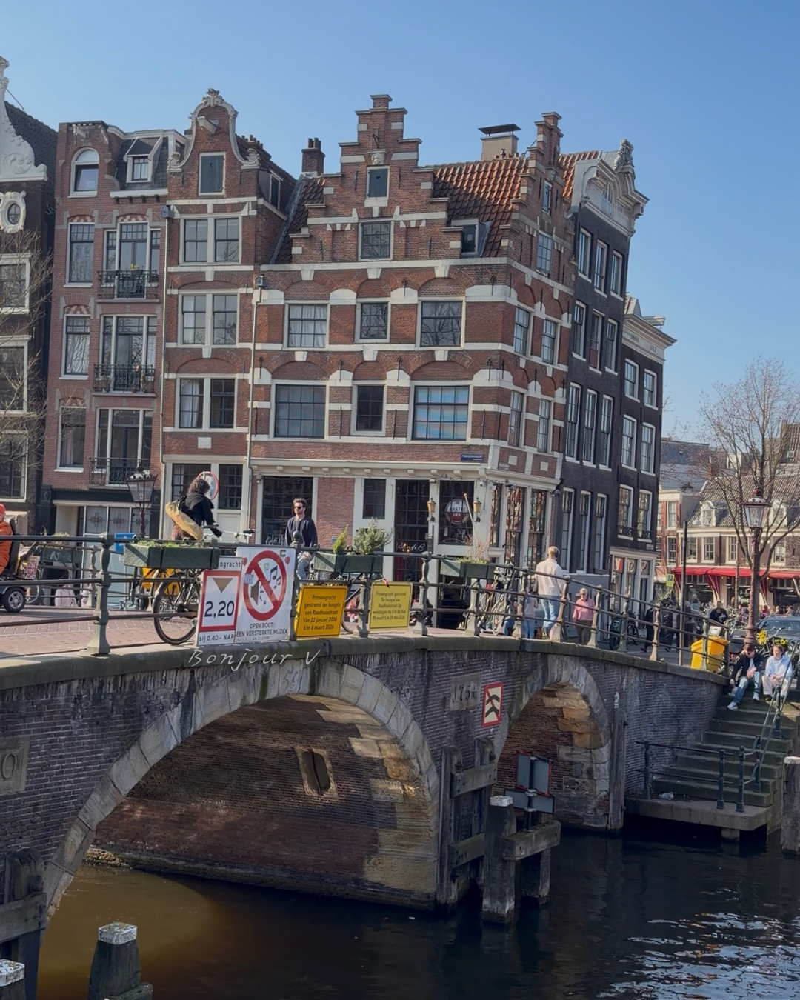

我先說——我大概十次有八九次，都不按牌理出牌。

尤其開始自己旅行之後，心變得越來越寬。（還好體沒有跟著一起放飛）
✦ ✦ ✦
Schedule，只存在出發前的幻想
以前的我，會把行程排得很滿，甚至時間精準到幾點幾分。
現在的我，schedule 這種東西，幾乎只存在於「出發前的幻想」。
真正開始走的時候——常常一個轉彎，就偏離了原本的路線。有時候是迷路，有時候是突然被某個香氣勾住，有時候，只是單純想坐下來發呆。
✦ ✦ ✦
不在計畫內的，反而最有記憶點
於是——原本應該輕快順利的旅行，多了一點點難度，也增加了一點點樂趣。
那些「不在計畫內」的片段，反而變成最有記憶點的地方。好像也因此——多了一點回味、長了一點技能、心也更放鬆了一些。
（這樣看起來，好像 Z 還真的大於 B）
✦ ✦ ✦
驚喜，或被好好接住
但我後來發現——劇本外的小彩蛋，固然讓人念念不忘；照本宣科的順順旅行，其實也有一種很安心的美好。
有些時候我們需要驚喜，有些時候，我們只是想好好被接住。
也許——不是我在安排旅行，是旅行在改寫我。